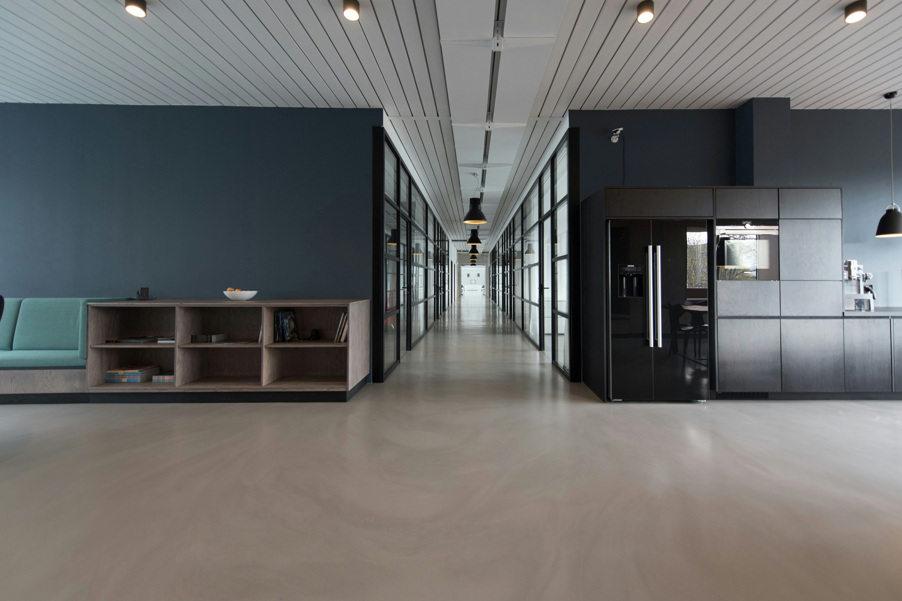
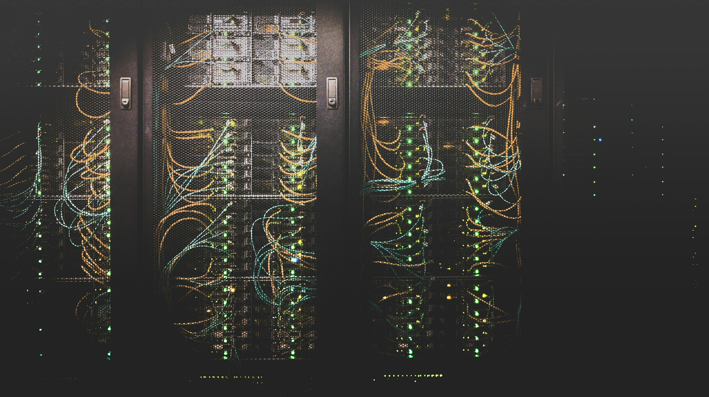

Suporte técnico
Atendimento remoto e presencial para estações de trabalho, servidores e periféricos, com SLA definido em contrato.
Tecnologia que impulsiona o seu negócio
A TechServices nasceu em 2010 com uma missão clara: aproximar a tecnologia das pessoas e tornar a infraestrutura de TI um aliado do crescimento. Começamos como uma pequena equipe de suporte técnico e, ao longo dos anos, expandimos nossa atuação para desenvolvimento de sistemas, segurança da informação e consultoria estratégica, atendendo hoje centenas de clientes em todo o país.



Atendimento remoto e presencial para estações de trabalho, servidores e periféricos, com SLA definido em contrato.
Projeto, implantação e gestão de redes cabeadas e sem fio, firewalls e conectividade de alta disponibilidade.
Criação de aplicações web e corporativas sob medida, do levantamento de requisitos à manutenção evolutiva.
Políticas de proteção de dados, backup, antivírus corporativo e adequação às boas práticas de conformidade.
Migração, hospedagem e gerenciamento de ambientes em nuvem, reduzindo custos de infraestrutura física.
Diagnóstico, planejamento estratégico e governança de tecnologia alinhados aos objetivos do seu negócio.
Nossa central de atendimento opera com equipe própria de analistas certificados, responsável pelo diagnóstico e resolução de incidentes em estações de trabalho, notebooks, impressoras e servidores. O atendimento remoto utiliza ferramentas de acesso seguro e é registrado em sistema de chamados, garantindo rastreabilidade.
Realizamos o projeto completo de cabeamento estruturado, configuração de switches gerenciáveis, roteadores e pontos de acesso sem fio, além da implantação de firewalls e redes virtuais privadas (VPN) para interligação segura entre filiais e colaboradores remotos.
Desenvolvemos aplicações web responsivas e sistemas corporativos integrados, seguindo metodologias ágeis, com levantamento de requisitos, prototipação, codificação, testes, homologação e manutenção evolutiva contínua.
Implantamos políticas de backup periódico, rotinas de recuperação de desastres, soluções de antivírus corporativo e controles de acesso, apoiando a adequação dos processos às boas práticas de proteção de dados pessoais.
Planejamos e executamos a migração de ambientes locais para a nuvem, dimensionando recursos conforme a demanda, reduzindo custos com equipamentos físicos e aumentando a disponibilidade dos sistemas.
|
Compromisso TechServicesEquipe fundadora atuante, com décadas de experiência somadas em tecnologia, gestão e atendimento — à frente de cada projeto entregue aos nossos clientes. |